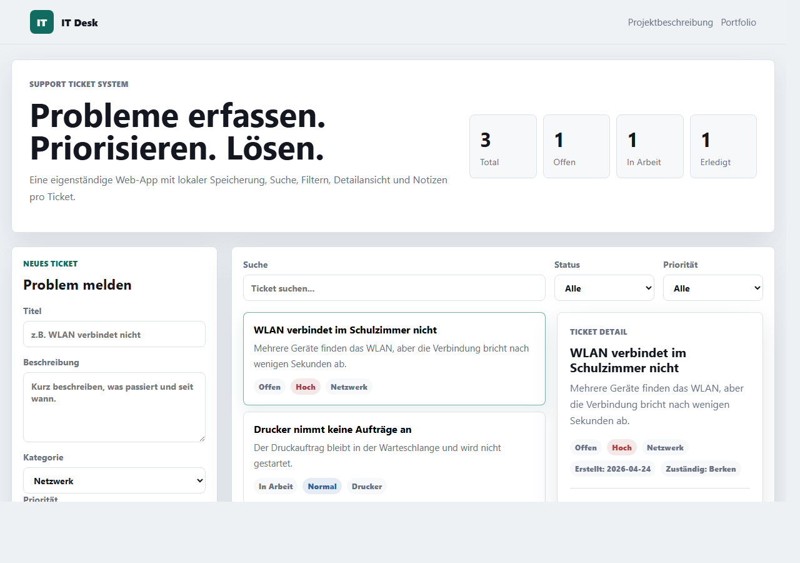

Umsetzung
Gebaut mit HTML, CSS und JavaScript. Die App funktioniert ohne Server und speichert Testdaten lokal im Browser. Dabei habe ich gelernt, wie man Daten mit localStorage speichert, Formulare verarbeitet und eine dynamische Liste rendert.
 Berken Portfolio
Berken Portfolio
Eigenes Projekt

Eine eigenständige Web-App, mit der IT-Probleme erfasst, gesucht, priorisiert und bearbeitet werden können.
Gebaut mit HTML, CSS und JavaScript. Die App funktioniert ohne Server und speichert Testdaten lokal im Browser. Dabei habe ich gelernt, wie man Daten mit localStorage speichert, Formulare verarbeitet und eine dynamische Liste rendert.
Ich kann eine Oberfläche strukturieren, Formulare verarbeiten, Daten filtern und Benutzeraktionen sichtbar machen.
IT-Support braucht genaues Erfassen, Priorisieren und saubere Nachverfolgung. Die App zeigt diesen Ablauf praktisch.